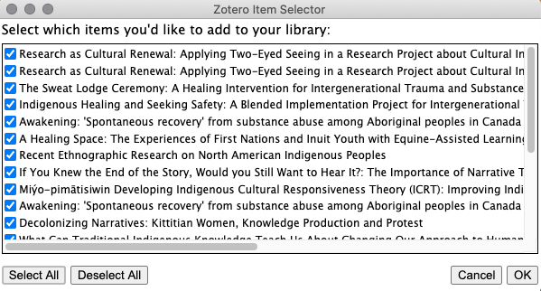

NVivo for literature reviews
SOWK 554C
Oct 2, 2020
Jeremy Buhler
Data Librarian, UBC Library Research Commons
jeremy.buhler@ubc.ca
https://bit.ly/nvivo-lit-review
"Down" navigation arrows in the slides lead to supporting links (e.g. installation instructions, instructional videos, UBC Library workshops)
To annotate in a Zoom presentation


Never used NVivo
Use it in my research
NVivo is software for Qualitative Data Analysis
- available for Mac and PC
- free for UBC students, faculty, and staff
- supported by the UBC Library Research Commons
Installing NVivo
NVivo support from UBC Library
Why use NVivo?
New ways to access and interact with your material
Record your thoughts as you go
Keep citations, sources, and notes in one place
Learn to use NVivo
- Instructional video series (University of Hull)
Excellent introduction to NVivo for Windows in 25 parts - NVivo resources for Windows and Mac
Integration with citation managers
- EndNote
- Mendeley
- RefWorks
- Zotero
...or add pdf and other documents individually
Using NVivo with citation managers
UBC Library citation management support
